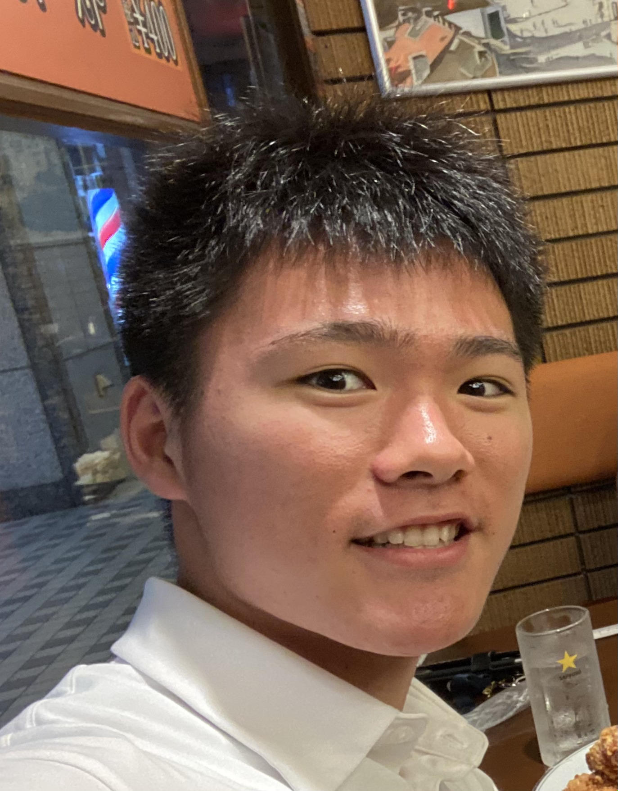

Masahiro Takechi / 武市 匡弘
2000年5月30日生まれ
・日本の大学に入る頭脳がなく、浪人回避のためアメリカの大学に進学（奇跡）。
・2020年秋、米大学2年生としてオンライン授業を日本で受けつつ、WEB制作の学習にも全集中。
・高校に引き続き硬式テニス部所属
・趣味は筋トレ、料理。
・感情の呼吸-拾壱の型-凪の使い手。
・自他ともに認めるストイックな性格が売りのコーディング重視の未経験WEBエンジニアです。